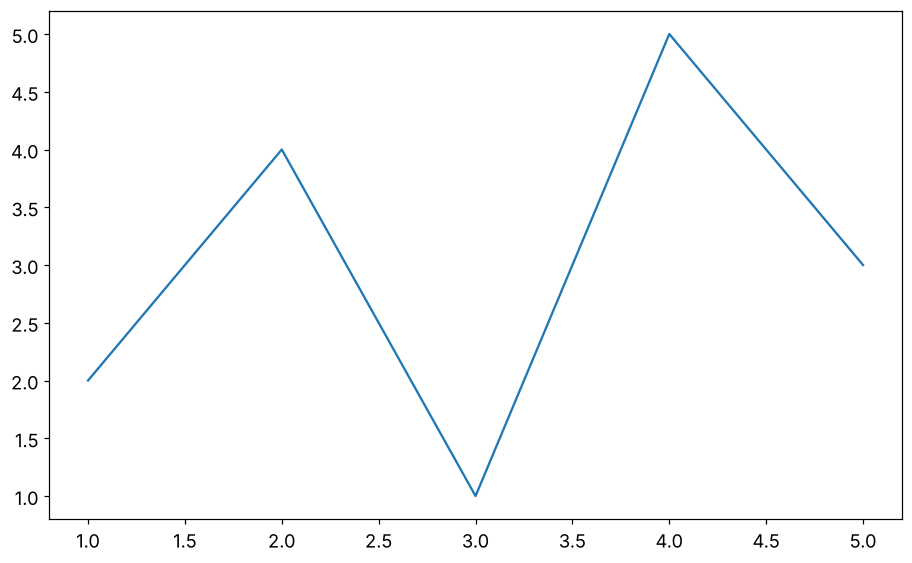
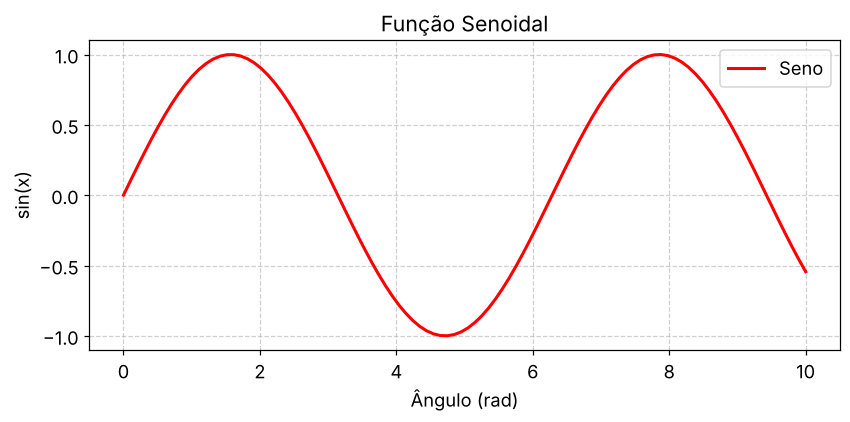
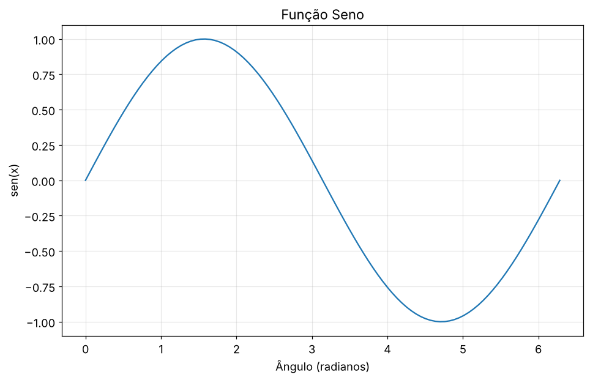
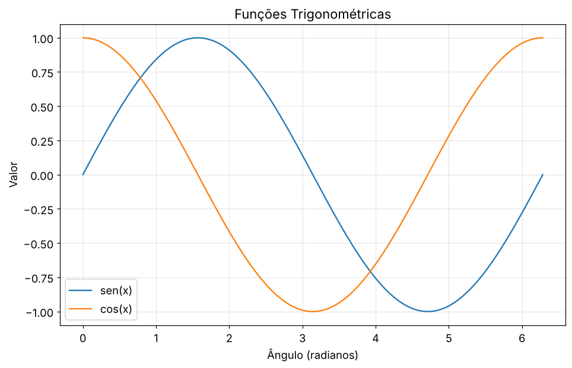
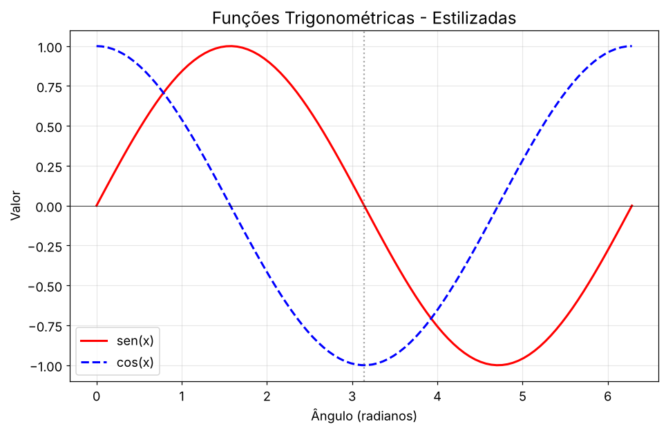
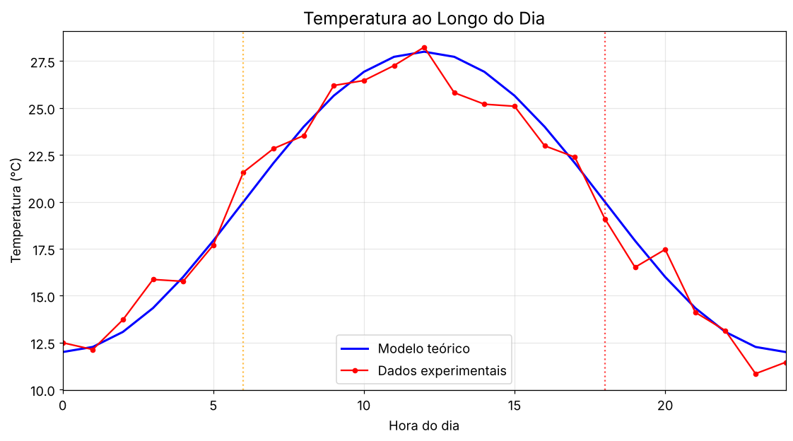
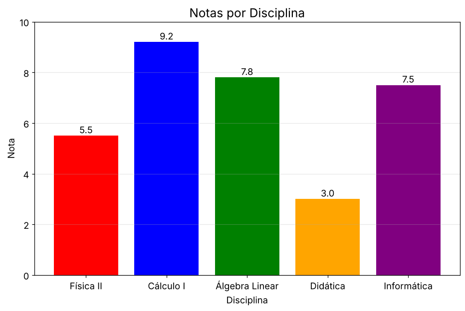
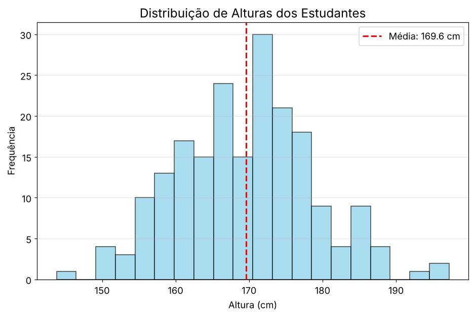
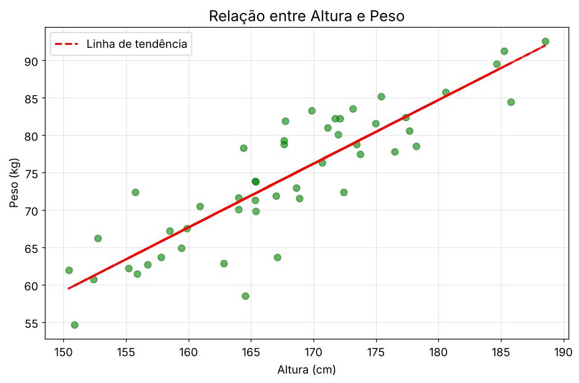
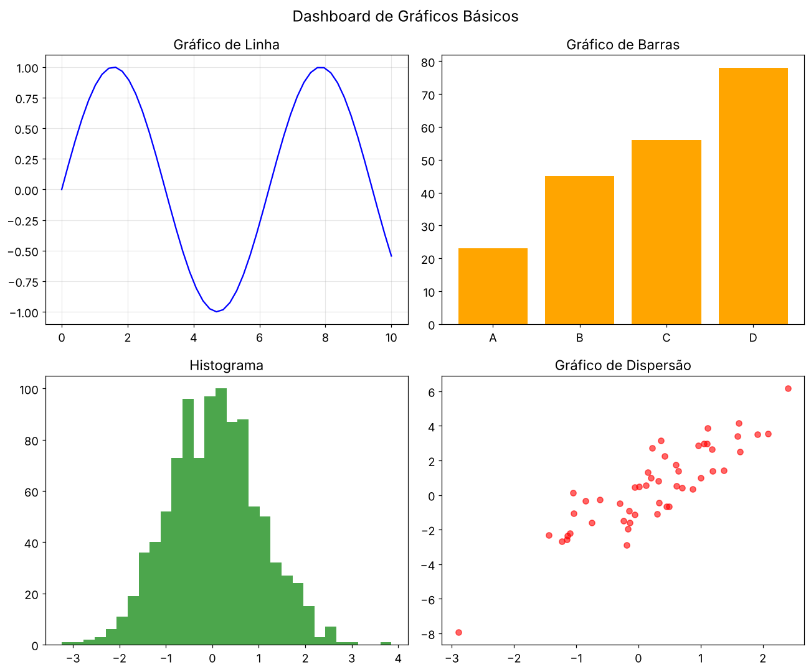

Aula 16 · Programação em Python
Introdução ao Matplotlib: gráficos básicos
O gráfico é o resultado de um experimento tanto quanto o número. Esta aula monta os tipos básicos e ensina a lê-los com olho crítico.
Hoje vamos aprender a transformar números em imagens que contam histórias! Como dizem: "Uma imagem vale mais que mil palavras" - e um gráfico bem feito vale mais que mil números!
1. Revisão rápida dos desafios
Vamos conferir os desafios da aula passada!
import numpy as np
# Desafio 1: Filtro com máscaras booleanas
dados = np.array([1, -2, 3, -4, 5, -6, 7, -8, 9])
positivos = dados[dados > 0]
negativos = dados[dados < 0]
print(f"originais: {dados}")
print(f"Positivos: {positivos} (média: {np.mean(positivos):.2f})")
print(f"Negativos: {negativos} (média: {np.mean(negativos):.2f})")
# Desafio 2: Identidade trigonométrica
angulos_graus = np.arange(0, 361, 15) # 0° a 360°, passo 15°
angulos_rad = np.radians(angulos_graus)
senos = np.sin(angulos_rad)
cossenos = np.cos(angulos_rad)
identidade = senos**2 + cossenos**2
print(f"sen²θ + cos²θ = 1:")
print(f"Máximo desvio da identidade: {np.max(np.abs(identidade - 1)):.2e}")
print("Identidade verificada numericamente! ✓")2. Por que visualizar dados?
import numpy as np
# Vamos mostrar por que gráficos são essenciais
print("=== O MESMO DADO, HISTÓRIAS DIFERENTES ===")
# Criando dados que têm a mesma média, mas comportamentos diferentes
np.random.seed(42)
dados1 = np.random.normal(50, 10, 1000) # Distribuição normal
dados2 = np.concatenate([np.random.normal(30, 5, 500),
np.random.normal(70, 5, 500)]) # Distribuição bimodal
dados3 = np.random.uniform(20, 80, 1000) # Distribuição uniforme
print(f"Dados 1 - Média: {np.mean(dados1):.2f}")
print(f"Dados 2 - Média: {np.mean(dados2):.2f}")
print(f"Dados 3 - Média: {np.mean(dados3):.2f}")
print("médias são quase iguais! Mas será que são iguais mesmo?")
print("Só o gráfico vai nos contar a história completa!")# Importando matplotlib
import matplotlib.pyplot as plt
# Configuração básica para gráficos mais bonitos
plt.rcParams['figure.figsize'] = (10, 6) # Tamanho padrão
plt.rcParams['font.size'] = 12 # Tamanho da fonte
print("=== BEM-VINDOS AO MATPLOTLIB ===")
print("A biblioteca mais usada para gráficos em Python!")
print("Usada por cientistas do mundo todo!")- Padrão da indústria: usado por milhões de cientistas
- Flexibilidade: desde gráficos simples até visualizações complexas
- Qualidade profissional: gráficos prontos para publicação
- Integração: funciona perfeitamente com NumPy e pandas
- Controle total: personalização de cada elemento
3. Seu primeiro gráfico
Vamos começar simples e ir evoluindo!
import matplotlib.pyplot as plt
# Dados simples
x = [1, 2, 3, 4, 5]
y = [2, 4, 1, 5, 3]
# Criando o gráfico
plt.figure()
plt.plot(x, y)
plt.show()
print("Parabéns! Você criou seu primeiro gráfico!")
print("Simples, mas já funciona!")
import matplotlib.pyplot as plt
import numpy as np
# Os mesmos dados
x = [1, 2, 3, 4, 5]
y = [2, 4, 1, 5, 3]
plt.figure()
plt.plot(x, y)
plt.title('Meu Primeiro Gráfico Melhorado')
plt.xlabel('Eixo X')
plt.ylabel('Eixo Y')
plt.grid(True) # Adicionando grade
plt.show()
print("Muito melhor! Agora tem título, rótulos e grade!")plt.plot() - Fundamentos
Sintaxe Básica:
plt.plot(x, y, fmt, **kwargs)x: Valores do eixo horizontal (lista ou array)y: Valores do eixo vertical (lista ou array)fmt: String de formatação (opcional) - estilo/cores
- Lista de objetos
Line2Drepresentando as linhas plotadas
fmt)
Estrutura: '[marker][line][color]'
| Componente | Caracteres | Exemplos |
|---|---|---|
| Marcador | ., o, v, \^, s, + | 'o' (círculos) |
| Estilo de linha | -, –, :, -., ” | '–' (tracejado) |
| Cor | b, g, r, c, m, y, k, w | 'r' (vermelho) |
'ro--'= círculos vermelhos com linha tracejada'g^:'= triângulos verdes com linha pontilhada'bs'= quadrados azuis sem linha
**kwargs)
Parâmetros Comuns:
color: Cor da linha (nome ou hex)Ex: 'C2', '#1f77b4'linestyle: Estilo da linhaEx: 'dashed', (0, (5, 10))linewidth: Espessura da linhaEx: 2.5marker: Marcador de pontosEx: 'D' (diamante)markersize: Tamanho do marcadorEx: 8label: Rótulo para legendaEx: 'Dados 2023'
plt.plot(x, y, color='green', linestyle=':',
linewidth=2, marker='o', markersize=8,
label='Tendência')plt.title(): Adiciona título ao gráficoplt.xlabel()/plt.ylabel(): Rótulos dos eixosplt.grid(): Ativa/desativa grade (True/False)plt.figure(): Cria nova figura (opcional)plt.show(): Exibe o gráfico
plt.title('Meu Gráfico', fontsize=14, pad=20)
plt.xlabel('Tempo (s)', fontstyle='italic')
plt.ylabel('Amplitude (V)', fontweight='bold')
plt.grid(True, linestyle=':', alpha=0.7)import matplotlib.pyplot as plt
import numpy as np
x = np.linspace(0, 10, 100)
y = np.sin(x)
plt.figure(figsize=(8, 4), dpi=100)
plt.plot(x, y, 'r-', linewidth=2, label='Seno')
plt.title('Função Senoidal', fontsize=14)
plt.xlabel('Ângulo (rad)', fontsize=12)
plt.ylabel('sin(x)', fontsize=12)
plt.grid(True, linestyle='--', alpha=0.6)
plt.legend()
plt.tight_layout()
plt.savefig('seno.png', dpi=300)
plt.show()- Dados suaves gerados com
np.linspace - Controle de tamanho (
figsize) e resolução (dpi) - Linha vermelha sólida espessa
- Grade tracejada semitransparente
- Salvamento em arquivo com alta resolução

import matplotlib.pyplot as plt
import numpy as np
# Criando dados com NumPy
x = np.linspace(0, 2*np.pi, 100) # 100 pontos de 0 a 2π
y = np.sin(x)
plt.figure()
plt.plot(x, y)
plt.title('Função Seno')
plt.xlabel('Ângulo (radianos)')
plt.ylabel('sen(x)')
plt.grid(True, alpha=0.3) # Grade mais sutil
plt.show()
print("Agora sim! Uma função matemática linda!")
np.linspace(start, stop, num): Cria um array comnumvalores igualmente espaçados destartastop0a2π(período completo da função seno)100pontos para curva suave
np.sin(x): Calcula o seno de cada elemento do arrayx- Operação vetorizada (aplicada a todo array sem loops)
- Aceita ângulos em radianos
- Domínio: \(x [0, 2]\)
- Função: \(y = (x)\)
- Propriedades:
- Periódica (\(2\))
- Amplitude \([-1, 1]\)
- Zeros em \(0, , 2\)
plt.figure(): Cria um novo canvas para o gráficoplt.plot(x, y): Traça a curva com os dados geradosplt.title(): Adiciona título descritivoplt.xlabel()/ylabel(): Rótulos dos eixos com unidadesplt.grid(): Adiciona grade de referênciaalpha=0.3controla a transparência
plt.show(): Exibe o gráfico
- Sempre incluir rótulos nos eixos
- Usar unidades quando aplicável (radianos)
- Grade sutil para não competir com os dados
- Título claro e descritivo
- Poucos pontos (ex: 10): Gráfico "quebrado", perde detalhes
- Muitos pontos (ex: 1000): Sobrecarga desnecessária
- 100 pontos:
- Resolução adequada para visualização
- Espaçamento de \({2}{100} 0.063\) radianos
- Curva suave em monitores comuns
| 10 pontos | 100 pontos |
|---|---|
| Segmentos retos visíveis | Curva contínua suave |
| Perda de detalhes | Representação fiel |
# Cosseno
y = np.cos(x)
# Seno com amplitude modificada
y = 2 * np.sin(x)
# Seno com fase deslocada
y = np.sin(x - np.pi/4)
# Seno com múltiplas frequências
y = np.sin(x) + 0.5*np.sin(3*x)x = np.linspace(-2*np.pi, 2*np.pi, 500)
plt.plot(x, np.sin(x)/x, label='sinc(x)')
plt.plot(x, np.cos(x), '--', label='cos(x)')
plt.legend()- Física: Movimento harmônico simples, ondas
- Engenharia: Análise de sinais, processamento digital
- Matemática: Visualização de conceitos de cálculo
- Computação: Geração de sinais para testes
- Simular oscilações em um sistema massa-mola
- Modelar variações diárias de temperatura
- Analisar padrões de ondas sonoras
plt.title(): título explicativoplt.xlabel(),plt.ylabel(): rótulos dos eixosplt.grid(): grade para facilitar leituraplt.legend(): legenda quando há múltiplas sériesplt.show(): exibe o gráfico na tela
4. Gráficos de linha - explorando funções
Vamos dominar os gráficos de linha, perfeitos para mostrar tendências!
import matplotlib.pyplot as plt
import numpy as np
# Criando dados para várias funções
x = np.linspace(0, 2*np.pi, 100)
seno = np.sin(x)
cosseno = np.cos(x)
plt.figure(figsize=(10, 6))
# Plotando múltiplas curvas
plt.plot(x, seno, label='sen(x)') # Primeira curva
plt.plot(x, cosseno, label='cos(x)') # Segunda curva
plt.title('Funções Trigonométricas')
plt.xlabel('Ângulo (radianos)')
plt.ylabel('Valor')
plt.legend() # Mostra a legenda
plt.grid(True, alpha=0.3)
plt.show()
print("Duas funções no mesmo gráfico! Agora dá para comparar!")
# Mesmos dados, visual melhor
x = np.linspace(0, 2*np.pi, 100)
seno = np.sin(x)
cosseno = np.cos(x)
plt.figure(figsize=(10, 6))
# Cores e estilos personalizados
plt.plot(x, seno, color='red', linewidth=2, linestyle='-', label='sen(x)')
plt.plot(x, cosseno, color='blue', linewidth=2, linestyle='--', label='cos(x)')
plt.title('Funções Trigonométricas - Estilizadas', fontsize=16)
plt.xlabel('Ângulo (radianos)', fontsize=12)
plt.ylabel('Valor', fontsize=12)
plt.legend(fontsize=12)
plt.grid(True, alpha=0.3)
# Adicionando linhas de referência
plt.axhline(y=0, color='black', linewidth=0.5) # Linha horizontal em y=0
plt.axvline(x=np.pi, color='gray', linestyle=':', alpha=0.7) # Linha em x=π
plt.show()
print("Agora sim! Visual profissional!")
- Cores: 'red', 'blue', 'green', ou códigos hex '#FF5733'
- Estilos de linha: '-' (sólida), '–' (tracejada), ':' (pontilhada)
- Espessura:
linewidth=2para linhas mais grossas - Marcadores: 'o' (círculo), 's' (quadrado), '^' (triângulo)
- Transparência:
alpha=0.7para efeitos sutis
# Simulando dados de temperatura ao longo do dia
horas = np.arange(0, 25) # 0h às 24h
temp_teorica = 20 + 8 * np.sin(2 * np.pi * (horas - 6) / 24) # Curva senoidal
# "Medições experimentais" com pequenos erros
np.random.seed(42)
ruido = np.random.normal(0, 1, len(horas))
temp_medida = temp_teorica + ruido
plt.figure(figsize=(12, 6))
# Plotando dados teóricos e experimentais
plt.plot(horas, temp_teorica, 'b-', linewidth=2, label='Modelo teórico')
plt.plot(horas, temp_medida, 'ro-', markersize=4, label='Dados experimentais')
plt.title('Temperatura ao Longo do Dia', fontsize=16)
plt.xlabel('Hora do dia', fontsize=12)
plt.ylabel('Temperatura (°C)', fontsize=12)
plt.legend()
plt.grid(True, alpha=0.3)
# Marcando horários importantes
plt.axvline(x=6, color='orange', linestyle=':', alpha=0.7, label='Nascer do sol')
plt.axvline(x=18, color='red', linestyle=':', alpha=0.7, label='Pôr do sol')
plt.xlim(0, 24)
plt.show()
print("Perfeito! Dados experimentais vs teoria!")
5. Outros tipos básicos de gráfico
Cada tipo de dados pede um tipo específico de gráfico!
# Dados de notas por disciplina
disciplinas = ['Física II', 'Cálculo I', 'Álgebra Linear', 'Didática', 'Informática']
notas = [5.5, 9.2, 7.8, 3.0, 7.5]
plt.figure(figsize=(10, 6))
# Criando gráfico de barras
plt.bar(disciplinas, notas, color=['red', 'blue', 'green', 'orange', 'purple'])
plt.title('Notas por Disciplina', fontsize=16)
plt.xlabel('Disciplina', fontsize=12)
plt.ylabel('Nota', fontsize=12)
plt.ylim(0, 10) # Definindo limites do eixo Y
# Adicionando valores nas barras
for i, nota in enumerate(notas):
plt.text(i, nota + 0.1, f'{nota}', ha='center', fontsize=12)
plt.grid(axis='y', alpha=0.3) # Grade só no eixo Y
plt.show()
print("Gráfico de barras: perfeito para comparar categorias!")
# Simulando alturas de estudantes
np.random.seed(42)
alturas = np.random.normal(170, 10, 200) # média 170cm, desvio 10cm
plt.figure(figsize=(10, 6))
# Criando histograma
plt.hist(alturas, bins=20, color='skyblue', alpha=0.7, edgecolor='black')
plt.title('Distribuição de Alturas dos Estudantes', fontsize=16)
plt.xlabel('Altura (cm)', fontsize=12)
plt.ylabel('Frequência', fontsize=12)
# Adicionando linha vertical na média
media = np.mean(alturas)
plt.axvline(media, color='red', linestyle='--', linewidth=2,
label=f'Média: {media:.1f} cm')
plt.legend()
plt.grid(axis='y', alpha=0.3)
plt.show()
print("Histograma: mostra como os dados se distribuem!")
# Relação entre altura e peso
np.random.seed(42)
alturas = np.random.normal(170, 10, 50)
# Peso correlacionado com altura + ruído
pesos = 0.8 * alturas - 60 + np.random.normal(0, 5, 50)
plt.figure(figsize=(10, 6))
# Gráfico de dispersão
plt.scatter(alturas, pesos, color='green', alpha=0.6, s=50)
plt.title('Relação entre Altura e Peso', fontsize=16)
plt.xlabel('Altura (cm)', fontsize=12)
plt.ylabel('Peso (kg)', fontsize=12)
plt.grid(True, alpha=0.3)
# Adicionando linha de tendência (opcional)
coeficientes = np.polyfit(alturas, pesos, 1)
linha_tendencia = np.polyval(coeficientes, alturas)
plt.plot(alturas, linha_tendencia, 'r--', linewidth=2,
label='Linha de tendência')
plt.legend()
plt.show()
print("Dispersão: mostra relações entre variáveis!")
- Linha: tendências ao longo do tempo, funções contínuas
- Barras: comparação entre categorias discretas
- Histograma: distribuição de frequências de uma variável
- Dispersão: relação entre duas variáveis numéricas
- Pizza: proporções de um todo (usar com moderação)
# Criando múltiplos gráficos em uma figura
fig, axes = plt.subplots(2, 2, figsize=(12, 10))
fig.suptitle('Dashboard de Gráficos Básicos', fontsize=16)
# Gráfico 1: Linha
x = np.linspace(0, 10, 50)
y = np.sin(x)
axes[0, 0].plot(x, y, 'b-')
axes[0, 0].set_title('Gráfico de Linha')
axes[0, 0].grid(True, alpha=0.3)
# Gráfico 2: Barras
categorias = ['A', 'B', 'C', 'D']
valores = [23, 45, 56, 78]
axes[0, 1].bar(categorias, valores, color='orange')
axes[0, 1].set_title('Gráfico de Barras')
# Gráfico 3: Histograma
dados = np.random.normal(0, 1, 1000)
axes[1, 0].hist(dados, bins=30, color='green', alpha=0.7)
axes[1, 0].set_title('Histograma')
# Gráfico 4: Dispersão
x_rand = np.random.randn(50)
y_rand = 2 * x_rand + np.random.randn(50)
axes[1, 1].scatter(x_rand, y_rand, color='red', alpha=0.6)
axes[1, 1].set_title('Gráfico de Dispersão')
plt.tight_layout() # Ajusta automaticamente o espaçamento
plt.show()
print("Subplots: organizando múltiplos gráficos!")
6. Salvando seus gráficos
Como preservar suas criações!
# Criando um gráfico para salvar
x = np.linspace(0, 2*np.pi, 100)
y = np.sin(x)
plt.figure(figsize=(10, 6))
plt.plot(x, y, 'b-', linewidth=2)
plt.title('Gráfico para Salvar', fontsize=16)
plt.xlabel('x', fontsize=12)
plt.ylabel('sen(x)', fontsize=12)
plt.grid(True, alpha=0.3)
# Salvando o gráfico
# Descomente a linha abaixo para salvar de verdade
# plt.savefig('meu_primeiro_grafico.png', dpi=300, bbox_inches='tight')
plt.show()
print("=== FORMATOS PARA SALVAR ===")
print("PNG: Melhor para apresentações e web")
print("PDF: Melhor para documentos científicos")
print("SVG: Melhor para edição posterior")
print("JPG: Menor tamanho, mas perde qualidade")
print(": plt.savefig('nome_arquivo.png')")- Use
dpi=300para alta qualidade - Use
bbox_inches='tight'para remover espaços - Escolha PNG para tela, PDF para impressão
- Salve ANTES de usar
plt.show()! - Organize seus gráficos em pastas
7. Desafios para casa
Agora é hora de praticar e criar seus próprios gráficos!
np.random.randint(18, 80, 100) e crie um histograma. Marque a idade média com uma linha vertical.
- Importação e configuração básica do Matplotlib
- Criação de gráficos de linha simples
- Personalização básica (títulos, rótulos, cores)
- Gráficos de barras para dados categóricos
- Histogramas para distribuições
- Gráficos de dispersão para relações
- Organização com subplots
- Salvamento de gráficos
plt.figure(): criar nova figuraplt.plot(): gráfico de linhaplt.bar(): gráfico de barrasplt.hist(): histogramaplt.scatter(): dispersãoplt.title(),plt.xlabel(),plt.ylabel(): rótulosplt.legend(): legendaplt.grid(): gradeplt.show(): mostrar gráficoplt.savefig(): salvar gráficoplt.subplots(): múltiplos gráficos
%%%%%%%%%%%%%%%%%%%%%%%%%%%%%%%%%%%%%%